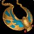
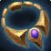
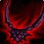

Translucent Spellthread Necklace
Translucent Spellthread NecklaceTranslucent Spellthread Necklace46 spell damage, 46 healing power, 15 spell hit rating (1.19%), 24 spell crit rating (1.09%)Drops from Reliquary of Souls, Black Temple
46 spell damage, 46 healing power, 15 spell hit rating (1.19%), 24 spell
crit rating (1.09%)
Drops from Reliquary of Souls, Black Temple
Showing all 6 spec cards.
No specs are selected, so no cards are showing. Use Show every spec to bring all of them back.
Elemental Shaman
Prioritynot yet decided
Constraints
Spell hit cap16%spells
Elemental Precision-6%
Nature's Guidance-3%
Totem of Wrath-3%
Gear needs4%
Entry set4.1%clear
by 0.1%
Tier set, Tier 6 head and shoulder and
chest and hands8.2%clear by 4.1%
No crit cap.
Part of this spec's damage is periodic, and periodic damage cannot crit
in this patch, so crit reaches less of its output than the character
sheet suggests.
Global cooldown floor at 50% spell haste, which nothing rostered reaches
from gear this phase.
Delta
Translucent Spellthread
NecklaceTranslucent Spellthread
Necklace46 spell damage, 46 healing power, 15 spell hit
rating (1.19%), 24 spell crit rating (1.09%)Drops from Reliquary of Souls, Black
Temple in Elemental
Shaman terms EPV
69.82
| Stat | Over best pre-phase off-piece,
Tempest Keep
 The Sun King's TalismanThe Sun King's Talisman22 stamina, 16 intellect, 41 spell damage, 41 healing power, 24 spell crit rating (1.09%) EPV 64.36 |
Over next best off-piece, Jewelcrafting Chain of the Twilight OwlChain of the Twilight Owl19 intellect, 21 spell damage, 21 healing power, 18 defense ratingOn use. Chain of the Twilight Owl for 1800 secCrafted, Jewelcrafting EPV 60.89 | Over next best off-piece, Jewelcrafting Eye of the NightEye of the Night16 spell hit rating (1.27%), 26 spell crit rating (1.18%), 15 spell penetrationOn use. Eye of the Night for 1800 secCrafted, Jewelcrafting EPV 59.72 | Over next best off-piece,
Karazhan
 Adornment of Stolen SoulsAdornment of Stolen Souls18 stamina, 20 intellect, 28 spell damage, 28 healing power, 23 spell crit rating (1.04%)Drops from Prince Malchezaar, Karazhan EPV 51.74 |
||||
|---|---|---|---|---|---|---|---|---|
| Change | Converted | Change | Converted | Change | Converted | Change | Converted | |
| stamina | -22 | 0 | 0 | -18 | ||||
| intellect | -16 | -0.20% spell crit | -19 | -0.24% spell crit | 0 | -20 | -0.25% spell crit | |
| spell damage | +5 | +25 | +46 | +18 | ||||
| healing power | +5 | +25 | +46 | +18 | ||||
| spell hit | +15 | +1.19% | +15 | +1.19% | -1 | -0.08% | +15 | +1.19% |
| spell crit | 0 | +24 | +1.09% | -2 | -0.09% | +1 | +0.05% | |
| spell penetration | 0 | 0 | -15 | -15 spell penetration | 0 | |||
| defense rating | 0 | -18 | 0 | 0 | ||||
| Stat Highlights (Total Change) | -0.20% spell crit +5 spell damage +5 healing power +1.19% spell hit | +0.85% spell crit +25 spell damage +25 healing power +1.19% spell hit | +46 spell damage +46 healing power -0.08% spell hit -0.09% spell crit | -0.20% spell crit +18 spell damage +18 healing power +1.19% spell hit | ||||
No Tier 6 and no best Phase 3 off-piece and no Tier 5 is ranked for this
spec in this slot, so that comparison is not shown. A weapon the
workbook does not rank cannot be compared against, and a spec with no
captured gear set has nothing recorded to carry in.
Balance Druid
Prioritynot yet decided
Constraints
Spell hit cap16%spells
Balance of Power-4%
Totem of Wrath-3%
Gear needs9%
Entry set8.5%short
by 0.6%
Tier set, Tier 6 head and shoulder and
chest and hands9.4%clear by 0.4%
The entry set holds four Tier 5 pieces, at the head, the shoulder, the
chest and the hands, which is the Tier 5 four-piece, so either token
breaks it; both tokens are raw EPV gains, and this set trades those four
for four Tier 6 pieces, at the head, the shoulder, the chest and the
hands.
No crit cap.
Part of this spec's damage is periodic, and periodic damage cannot crit
in this patch, so crit reaches less of its output than the character
sheet suggests.
Global cooldown floor at 50% spell haste, which nothing rostered reaches
from gear this phase.
Delta
Translucent Spellthread
NecklaceTranslucent Spellthread
Necklace46 spell damage, 46 healing power, 15 spell hit
rating (1.19%), 24 spell crit rating (1.09%)Drops from Reliquary of Souls, Black
Temple in Balance Druid
terms EPV 78.40
| Stat | Over best pre-phase off-piece, Jewelcrafting Eye of the NightEye of the Night16 spell hit rating (1.27%), 26 spell crit rating (1.18%), 15 spell penetrationOn use. Eye of the Night for 1800 secCrafted, Jewelcrafting EPV 68.80 | Over next best off-piece, Tempest Keep The Sun King's TalismanThe Sun King's Talisman22 stamina, 16 intellect, 41 spell damage, 41 healing power, 24 spell crit rating (1.09%) EPV 61.48 | Over next best off-piece, Jewelcrafting Chain of the Twilight OwlChain of the Twilight Owl19 intellect, 21 spell damage, 21 healing power, 18 defense ratingOn use. Chain of the Twilight Owl for 1800 secCrafted, Jewelcrafting EPV 54.67 | Over next best off-piece, Karazhan Brooch of Unquenchable FuryBrooch of Unquenchable Fury24 stamina, 21 intellect, 26 spell damage, 26 healing power, 15 spell hit rating (1.19%)Drops from Moroes, Karazhan EPV 51.98 | ||||
|---|---|---|---|---|---|---|---|---|
| Change | Converted | Change | Converted | Change | Converted | Change | Converted | |
| stamina | 0 | -22 | 0 | -24 | ||||
| intellect | 0 | -16 | -0.20% spell crit · -4 spell damage · -4 healing power | -19 | -0.24% spell crit · -4.75 spell damage · -4.75 healing power | -21 | -0.26% spell crit · -5.25 spell damage · -5.25 healing power | |
| spell damage | +46 | +5 | +25 | +20 | ||||
| healing power | +46 | +5 | +25 | +20 | ||||
| spell hit | -1 | -0.08% | +15 | +1.19% | +15 | +1.19% | 0 | |
| spell crit | -2 | -0.09% | 0 | +24 | +1.09% | +24 | +1.09% | |
| spell penetration | -15 | -15 spell penetration | 0 | 0 | 0 | |||
| defense rating | 0 | 0 | -18 | 0 | ||||
| Stat Highlights (Total Change) | +46 spell damage +46 healing power -0.08% spell hit -0.09% spell crit | -0.20% spell crit +1 spell damage +1 healing power +1.19% spell hit | +0.85% spell crit +20.25 spell damage +20.25 healing power +1.19% spell hit | +0.82% spell crit +14.75 spell damage +14.75 healing power | ||||
No Tier 6 and no best Phase 3 off-piece and no Tier 5 is ranked for this
spec in this slot, so that comparison is not shown. A weapon the
workbook does not rank cannot be compared against, and a spec with no
captured gear set has nothing recorded to carry in.
Arcane Mage
Prioritynot yet decided
Constraints
Spell hit cap16%spells
Arcane Focus-10%
Gear needs6%
Entry set6.6%clear
by 0.6%
Tier set, Tier 6 legs6.1%clear
by 0.1%
No crit cap.
Global cooldown floor at 50% spell haste, which nothing rostered reaches
from gear this phase.
Delta
Translucent Spellthread
NecklaceTranslucent Spellthread
Necklace46 spell damage, 46 healing power, 15 spell hit
rating (1.19%), 24 spell crit rating (1.09%)Drops from Reliquary of Souls, Black
Temple in Arcane Mage
terms EPV 38.43
| Stat | Over best pre-phase off-piece, Tempest Keep The Sun King's TalismanThe Sun King's Talisman22 stamina, 16 intellect, 41 spell damage, 41 healing power, 24 spell crit rating (1.09%) EPV 41.68 | Over next best off-piece, Jewelcrafting Chain of the Twilight OwlChain of the Twilight Owl19 intellect, 21 spell damage, 21 healing power, 18 defense ratingOn use. Chain of the Twilight Owl for 1800 secCrafted, Jewelcrafting EPV 40.01 | Over next best off-piece, Karazhan Adornment of Stolen SoulsAdornment of Stolen Souls18 stamina, 20 intellect, 28 spell damage, 28 healing power, 23 spell crit rating (1.04%)Drops from Prince Malchezaar, Karazhan EPV 36.48 | Over next best off-piece, Jewelcrafting Eye of the NightEye of the Night16 spell hit rating (1.27%), 26 spell crit rating (1.18%), 15 spell penetrationOn use. Eye of the Night for 1800 secCrafted, Jewelcrafting EPV 32.75 | ||||
|---|---|---|---|---|---|---|---|---|
| Change | Converted | Change | Converted | Change | Converted | Change | Converted | |
| stamina | -22 | 0 | -18 | 0 | ||||
| intellect | -16 | -0.23% spell crit · -4.60 spell damage | -19 | -0.27% spell crit · -5.46 spell damage | -20 | -0.29% spell crit · -5.75 spell damage | 0 | |
| spell damage | +5 | +25 | +18 | +46 | ||||
| healing power | +5 | +25 | +18 | +46 | ||||
| spell hit | +15 | +1.19% | +15 | +1.19% | +15 | +1.19% | -1 | -0.08% |
| spell crit | 0 | +24 | +1.09% | +1 | +0.05% | -2 | -0.09% | |
| spell penetration | 0 | 0 | 0 | -15 | -15 spell penetration | |||
| defense rating | 0 | -18 | 0 | 0 | ||||
| Stat Highlights (Total Change) | -0.23% spell crit +0.40 spell damage +5 healing power +1.19% spell hit | +0.81% spell crit +19.54 spell damage +25 healing power +1.19% spell hit | -0.24% spell crit +12.25 spell damage +18 healing power +1.19% spell hit | +46 spell damage +46 healing power -0.08% spell hit -0.09% spell crit | ||||
No Tier 6 and no best Phase 3 off-piece and no Tier 5 is ranked for this
spec in this slot, so that comparison is not shown. A weapon the
workbook does not rank cannot be compared against, and a spec with no
captured gear set has nothing recorded to carry in.
Shadow Priest
Prioritynot yet decided
Constraints
Spell hit cap16%spells
Shadow Focus-10%
Gear needs6%
Entry set7.3%clear
by 1.3%
Tier set, Tier 6 head and shoulder and
chest and hands7.9%clear by 1.9%
No crit cap.
Part of this spec's damage is periodic, and periodic damage cannot crit
in this patch, so crit reaches less of its output than the character
sheet suggests.
Global cooldown floor at 50% spell haste, which nothing rostered reaches
from gear this phase.
Delta
Translucent Spellthread
NecklaceTranslucent Spellthread
Necklace46 spell damage, 46 healing power, 15 spell hit
rating (1.19%), 24 spell crit rating (1.09%)Drops from Reliquary of Souls, Black
Temple in Shadow Priest
terms EPV 61.85
| Stat | Over best pre-phase off-piece, Karazhan Ritssyn's Lost PendantRitssyn's Lost Pendant24 stamina, 51 shadow damageDrops from Trash / zone drop, Karazhan EPV 51.00 | Over next best off-piece, Jewelcrafting Eye of the NightEye of the Night16 spell hit rating (1.27%), 26 spell crit rating (1.18%), 15 spell penetrationOn use. Eye of the Night for 1800 secCrafted, Jewelcrafting EPV 50.97 | Over next best off-piece, Tempest Keep The Sun King's TalismanThe Sun King's Talisman22 stamina, 16 intellect, 41 spell damage, 41 healing power, 24 spell crit rating (1.09%) EPV 46.30 | Over next best off-piece, Karazhan Brooch of Unquenchable FuryBrooch of Unquenchable Fury24 stamina, 21 intellect, 26 spell damage, 26 healing power, 15 spell hit rating (1.19%)Drops from Moroes, Karazhan EPV 38.84 | ||||
|---|---|---|---|---|---|---|---|---|
| Change | Converted | Change | Converted | Change | Converted | Change | Converted | |
| stamina | -24 | 0 | -22 | -24 | ||||
| intellect | 0 | 0 | -16 | -0.20% spell crit | -21 | -0.26% spell crit | ||
| spell damage | +46 | +46 | +5 | +20 | ||||
| healing power | +46 | +46 | +5 | +20 | ||||
| shadow damage | -51 | 0 | 0 | 0 | ||||
| spell hit | +15 | +1.19% | -1 | -0.08% | +15 | +1.19% | 0 | |
| spell crit | +24 | +1.09% | -2 | -0.09% | 0 | +24 | +1.09% | |
| spell penetration | 0 | -15 | -15 spell penetration | 0 | 0 | |||
| Stat Highlights (Total Change) | +46 spell damage +46 healing power +1.19% spell hit +1.09% spell crit | +46 spell damage +46 healing power -0.08% spell hit -0.09% spell crit | -0.20% spell crit +5 spell damage +5 healing power +1.19% spell hit | +0.82% spell crit +20 spell damage +20 healing power | ||||
No Tier 6 and no best Phase 3 off-piece and no Tier 5 is ranked for this
spec in this slot, so that comparison is not shown. A weapon the
workbook does not rank cannot be compared against, and a spec with no
captured gear set has nothing recorded to carry in.
Affliction Warlock
Prioritynot yet decided
Constraints
Spell hit cap16%spells
Totem of Wrath-3%
Gear needs13.1%
The Suppression talent does not cover this spec's filler spell, so none
of it counts.
Entry set16.1%clear
by 3%
Tier set, Tier 6 head and shoulder and
hands18.3%clear by 5.2%
No crit cap.
Part of this spec's damage is periodic, and periodic damage cannot crit
in this patch, so crit reaches less of its output than the character
sheet suggests.
Global cooldown floor at 50% spell haste, which nothing rostered reaches
from gear this phase.
Delta
Translucent Spellthread
NecklaceTranslucent Spellthread
Necklace46 spell damage, 46 healing power, 15 spell hit
rating (1.19%), 24 spell crit rating (1.09%)Drops from Reliquary of Souls, Black
Temple in Affliction
Warlock terms EPV
79.03
| Stat | Over best pre-phase off-piece, Jewelcrafting Eye of the NightEye of the Night16 spell hit rating (1.27%), 26 spell crit rating (1.18%), 15 spell penetrationOn use. Eye of the Night for 1800 secCrafted, Jewelcrafting EPV 70.71 | Over next best off-piece, Tempest Keep The Sun King's TalismanThe Sun King's Talisman22 stamina, 16 intellect, 41 spell damage, 41 healing power, 24 spell crit rating (1.09%) EPV 57.60 | Over next best off-piece, Jewelcrafting Chain of the Twilight OwlChain of the Twilight Owl19 intellect, 21 spell damage, 21 healing power, 18 defense ratingOn use. Chain of the Twilight Owl for 1800 secCrafted, Jewelcrafting EPV 52.26 | Over next best off-piece, Karazhan Brooch of Unquenchable FuryBrooch of Unquenchable Fury24 stamina, 21 intellect, 26 spell damage, 26 healing power, 15 spell hit rating (1.19%)Drops from Moroes, Karazhan EPV 51.98 | ||||
|---|---|---|---|---|---|---|---|---|
| Change | Converted | Change | Converted | Change | Converted | Change | Converted | |
| stamina | 0 | -22 | 0 | -24 | ||||
| intellect | 0 | -16 | -0.20% spell crit | -19 | -0.23% spell crit | -21 | -0.26% spell crit | |
| spell damage | +46 | +5 | +25 | +20 | ||||
| healing power | +46 | +5 | +25 | +20 | ||||
| spell hit | -1 | -0.08% | +15 | +1.19% | +15 | +1.19% | 0 | |
| spell crit | -2 | -0.09% | 0 | +24 | +1.09% | +24 | +1.09% | |
| spell penetration | -15 | -15 spell penetration | 0 | 0 | 0 | |||
| defense rating | 0 | 0 | -18 | 0 | ||||
| Stat Highlights (Total Change) | +46 spell damage +46 healing power -0.08% spell hit -0.09% spell crit | -0.20% spell crit +5 spell damage +5 healing power +1.19% spell hit | +0.86% spell crit +25 spell damage +25 healing power +1.19% spell hit | +0.83% spell crit +20 spell damage +20 healing power | ||||
No Tier 6 and no best Phase 3 off-piece and no Tier 5 is ranked for this
spec in this slot, so that comparison is not shown. A weapon the
workbook does not rank cannot be compared against, and a spec with no
captured gear set has nothing recorded to carry in.
Destruction Warlock
Prioritynot yet decided
Constraints
Spell hit cap16%spells
Totem of Wrath-3%
Gear needs13.1%
No hit talent exists for this spec.
Entry set13.5%clear
by 0.4%
Tier set, Tier 6 head and shoulder and
hands15.4%clear by 2.3%
No crit cap.
Global cooldown floor at 50% spell haste, which nothing rostered reaches
from gear this phase.
Delta
Translucent Spellthread
NecklaceTranslucent Spellthread
Necklace46 spell damage, 46 healing power, 15 spell hit
rating (1.19%), 24 spell crit rating (1.09%)Drops from Reliquary of Souls, Black
Temple in Destruction
Warlock terms EPV
95.74
| Stat | Over best Phase 3 off-piece, Hyjal
Summit
 Hellfire-Encased PendantHellfire-Encased Pendant16 stamina, 17 intellect, 12 spirit, 51 fire damage, 24 spell crit rating (1.09%)Drops from Trash / zone drop, Black Temple; Trash / zone drop, Mount Hyjal EPV 87.73 |
Over best pre-phase off-piece, Jewelcrafting Eye of the NightEye of the Night16 spell hit rating (1.27%), 26 spell crit rating (1.18%), 15 spell penetrationOn use. Eye of the Night for 1800 secCrafted, Jewelcrafting EPV 84.61 | Over next best off-piece, Tempest Keep The Sun King's TalismanThe Sun King's Talisman22 stamina, 16 intellect, 41 spell damage, 41 healing power, 24 spell crit rating (1.09%) EPV 75.83 | Over next best off-piece, Jewelcrafting Chain of the Twilight OwlChain of the Twilight Owl19 intellect, 21 spell damage, 21 healing power, 18 defense ratingOn use. Chain of the Twilight Owl for 1800 secCrafted, Jewelcrafting EPV 67.43 | ||||
|---|---|---|---|---|---|---|---|---|
| Change | Converted | Change | Converted | Change | Converted | Change | Converted | |
| stamina | -16 | 0 | -22 | 0 | ||||
| intellect | -17 | -0.21% spell crit | 0 | -16 | -0.20% spell crit | -19 | -0.23% spell crit | |
| spirit | -12 | 0 | 0 | 0 | ||||
| spell damage | +46 | +46 | +5 | +25 | ||||
| healing power | +46 | +46 | +5 | +25 | ||||
| fire damage | -51 | 0 | 0 | 0 | ||||
| spell hit | +15 | +1.19% | -1 | -0.08% | +15 | +1.19% | +15 | +1.19% |
| spell crit | 0 | -2 | -0.09% | 0 | +24 | +1.09% | ||
| spell penetration | 0 | -15 | -15 spell penetration | 0 | 0 | |||
| defense rating | 0 | 0 | 0 | -18 | ||||
| Stat Highlights (Total Change) | -0.21% spell crit +46 spell damage +46 healing power +1.19% spell hit | +46 spell damage +46 healing power -0.08% spell hit -0.09% spell crit | -0.20% spell crit +5 spell damage +5 healing power +1.19% spell hit | +0.86% spell crit +25 spell damage +25 healing power +1.19% spell hit | ||||
No Tier 6 and no Tier 5 is ranked for this spec in this slot, so that
comparison is not shown. A weapon the workbook does not rank cannot be
compared against, and a spec with no captured gear set has nothing
recorded to carry in.